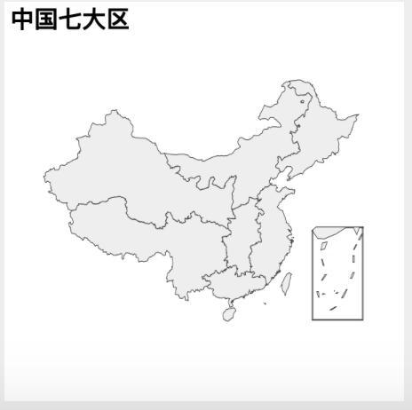
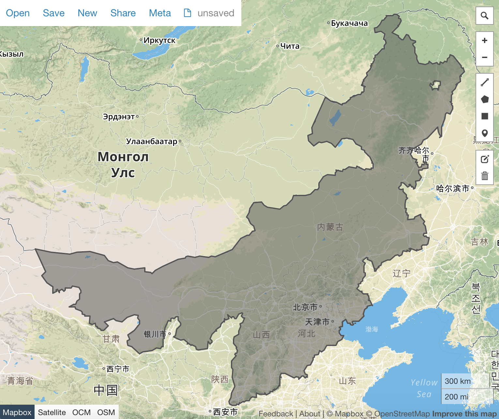

制作华北平原
开篇
想知道 中国七大区 如何制作吗？这一篇讲解其中的技术细节，让大家轻松制作任意合集。

理论
用 echarts-mapmaker 和 echarts 现有的地图资源，制作华北平原是非常简单的事情。
如何呢？echarts:map/json/china.json 提供全国省份的地图。我们需要做的
就是把各个省份拆开，然后把华北平原的省份合起来。
简单操作
- git clone https://github.com/apache/incubator-echarts。千万不要下载
- 把 incubator-echarts/map/json/china.json 拷贝到当前工作目录。
-
拆分
china.json， 以得到所有独立的省份。$ split china.json $ ls china.json 吉林.geojson 山东.geojson 江苏.geojson 海南.geojson 福建.geojson 陕西.geojson 上海.geojson 四川.geojson 山西.geojson 江西.geojson 湖北.geojson 西藏.geojson 青海.geojson 云南.geojson 天津.geojson 广东.geojson 河北.geojson 湖南.geojson 贵州.geojson 香港.geojson 北京.geojson 宁夏.geojson 广西.geojson 河南.geojson 澳门.geojson 辽宁.geojson 内蒙古.geojson 台湾.geojson 安徽.geojson 新疆.geojson 浙江.geojson 甘肃.geojson 重庆.geojson 黑龙江.geojson好了，现在都拆分开了。
-
合并。还记得华北包括哪些省份吗？他们分别是：河北，内蒙古，山西，北京，天津。
$ merge 河北.geojson 内蒙古.geojson $ merge merged_河北.geojson 山西.geojson $ merge merged_merged_河北.geojson 北京.geojson $ merge merged_merged_merged_河北.geojson 天津.geojson $ mv merged_merged_merged_merged_河北.geojson 华北.geojson怎么会有这么多 'merged_' ？
merge工具自动加一个前缀，运行多次，就有这么多了。有改进意见的话，可以告诉我。 -
最后让我们来看看华北平原吧。
请注意，我们现在得到的 华北.geojson 是用万国码编码过的，其他工具是打不开的。怎么办？
decode 华北.geojson huabei.geojson然后打开 geojson.io，看到华北平原了吗？

如何去掉内部边界呢
- 记住，我们先要解码。如果还没有这么做的话，请参看前面的的命令。
-
用地图整形器抹掉内部边界
mapshaper huabei.geojson -dissolve2 -o huabei-shape-only.geojson1. 看看结果？
家庭作业
- 参照前面，把华北地图做成一个 js 的版本。
- 做一个华中地图。
- 再难一点，做一个中国七大区的地图。